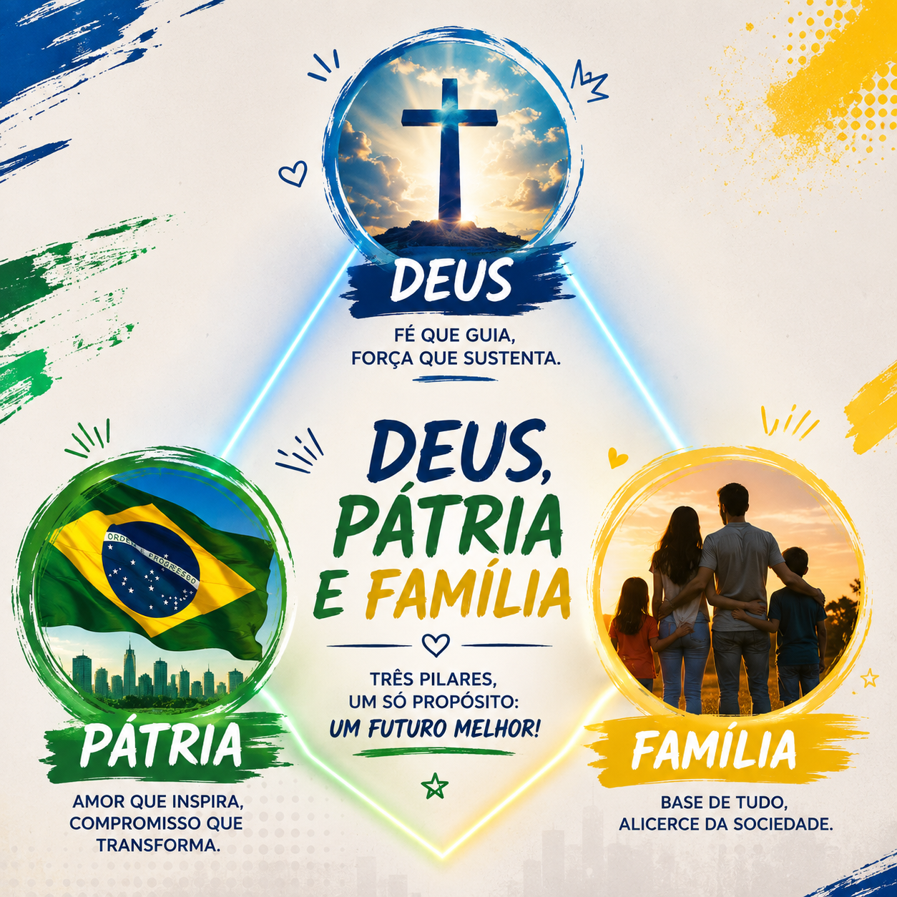

No Brasil, tal lema reunia as propostas da Ação Integralista Brasileira, um movimento conhecido como o "fascismo brasileiro", que foi fundado em 1932. Nesse contexto, o termo "Deus" indicaria a influência religiosa cristã dos integralistas, uma vez que era Deus "que dirigia o destino dos povos". Já o termo "pátria", por sua vez, era definido como "nosso lar" e os integralistas pretendiam alcançar uma unidade através da constituição de um Estado "integral", que legitimava o nome do movimento. Por fim, o termo "família" era apresentado como a menor unidade de organização social, seria o "início e fim de tudo", bem como a garantia da manutenção da tradição.
No conceito "Deus, Pátria e Família", Deus ocupa o primeiro lugar por ser considerado o criador de todas as coisas e a fonte dos princípios morais que orientam a vida humana. A Bíblia ensina que a fé em Deus ajuda as pessoas a viverem com amor, justiça, honestidade e respeito ao próximo. Para os defensores desse princípio, uma sociedade se fortalece quando seus valores são inspirados nos ensinamentos de Deus.
"Buscai primeiro o Reino de Deus e a sua justiça, e todas estas coisas vos serão acrescentadas." Mateus 6:33
A Pátria representa o amor, o respeito e o compromisso com a nação. Dentro do conceito "Deus, Pátria e Família", acredita-se que os valores ensinados por Deus são praticados nas famílias e refletem na sociedade, contribuindo para a construção de uma pátria mais justa, unida e solidária. Dessa forma, a fé orienta os princípios morais, a família transmite esses valores e a pátria é fortalecida por cidadãos que os colocam em prática.
A família é considerada o primeiro ambiente onde as pessoas aprendem valores como respeito, amor, responsabilidade e solidariedade. Dentro do conceito "Deus, Pátria e Família", acredita-se que os ensinamentos de Deus são transmitidos pela família, formando cidadãos que contribuem para o bem da pátria. Dessa forma, a família é vista como o alicerce que ajuda a construir uma sociedade mais unida e consciente.
"Instrui a criança no caminho em que deve andar, e até quando envelhecer não se desviará dele." Provérbios 22:6
Na visão cristã, defender os valores de Deus, Pátria e Família significa preservar princípios que ajudam a orientar a vida das pessoas e a convivência em sociedade. Deus é visto como a fonte do amor, da justiça e da sabedoria. A família é considerada o primeiro lugar onde esses valores são ensinados e praticados. Já a pátria representa a comunidade na qual os cidadãos exercem sua responsabilidade, buscando o bem comum.
Para muitos cristãos, esses três pilares estão interligados: a fé em Deus inspira valores morais, a família transmite esses ensinamentos às novas gerações e a pátria é fortalecida por cidadãos que vivem de acordo com princípios de respeito, solidariedade e responsabilidade.
A Bíblia ensina: "Amarás o Senhor teu Deus de todo o teu coração, de toda a tua alma e de todo o teu entendimento" Mateus 22:37, mostrando a importância de colocar Deus como guia da vida e das ações.
Informações consultadas em:
Chat gpt
Wikipédia
Dedico minha segunda página web, de maneira especial, a Livia Alfeld, inspiradora deste trabalho sobre o tema "Deus, Pátria e Família".
Agradeço profundamente por estar presente em todos os momentos, oferecendo apoio, incentivo e palavras de encorajamento. Sua companhia e dedicação têm sido fundamentais para o meu crescimento pessoal.
Foi com grande carinho e empenho que desenvolvi esta página!
Ao longo de sua construção, tive a oportunidade de aprender mais sobre esse tema e ampliar meus conhecimentos. Sua influência positiva me motiva diariamente a buscar novos aprendizados e a enxergar o valor de cada experiência.
Com admiração, gratidão e afeto, dedico este trabalho a você.
Maria Clara Trindade.